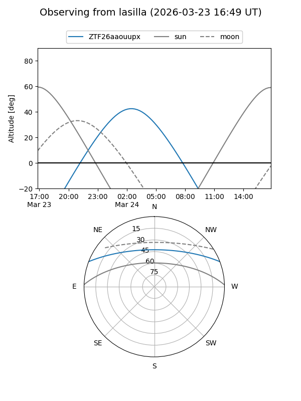
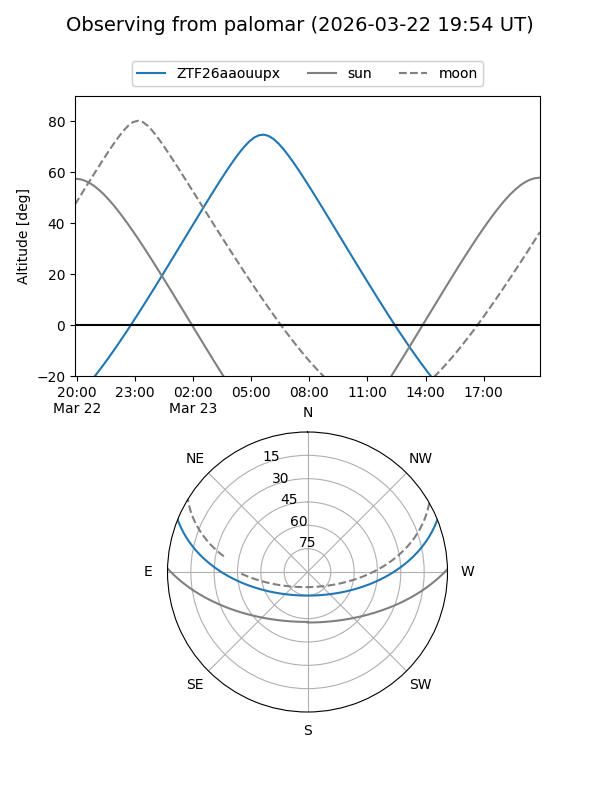

ZTF26aaouupx
Target ZTF26aaouupx at 2026-03-23 10:23
Aliases and brokers:
FINK: link
Lasair: link
ALeRCE: link
alt names
ZTF26aaouupx (ztf,fink_ztf)
Coordinates:
equatorial (ra, dec) = 147.5110,+18.31122
equatorial (HMS+DMS) = 09:50:02.65,+18:18:40.39
galactic (l, b) = (215.0197,+47.48211)
Flags:
Photometry:
last ztfg=16.85
1 ztfg detections
Lightcurve
Visibility


Additional plots